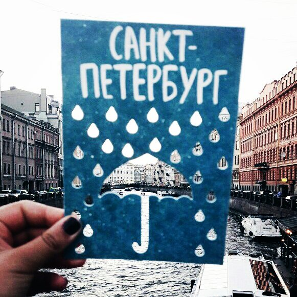
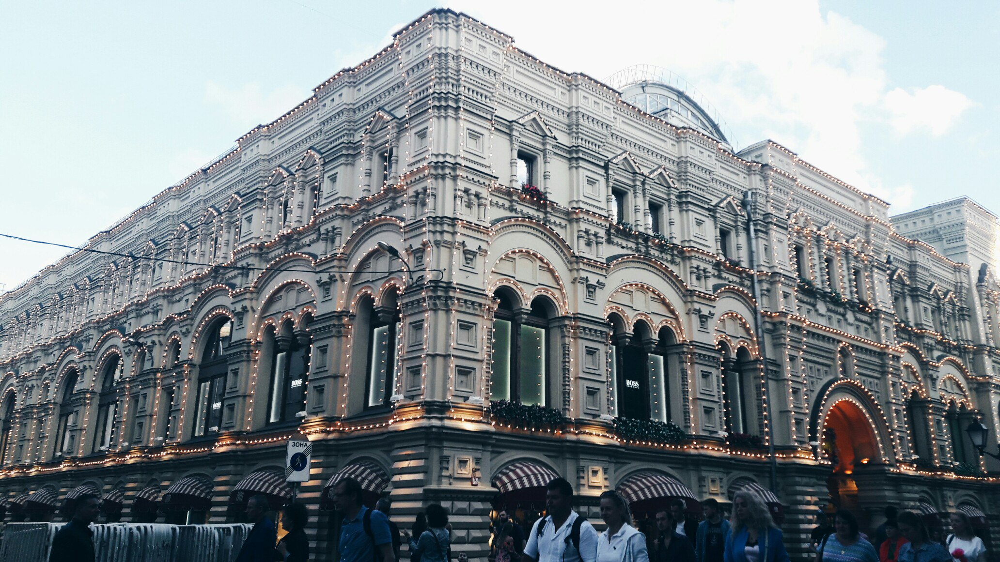

St Petersburg is the second largest city in Russia and one of the most beautiful cities in the world. It was founded in 1703 by Peter the Great as the "Window on the West". Thousands of workmen were brought from all parts of Russia to build a new city on the swampy land at the mouth of the Neva River. Peter the Great was in a hurry. The work was fast and hard, and workmen dropped dead by the hundreds. But the work went on.
In 1917 St Petersburg, a city of great beauty, with palaces, cathedrals, churches, government buildings became the capital. Under later rulers the new capital of the Russian Empire grew rapidly in wealth and beauty. Architects were brought from western Europe to lay out the city in harmonious squares.Buildings were constructed of grey and rose-coloured granite. The Hermitage Palace and the Winter Palace, the homes of the tsars, were equal to any in Europe.
When the First World War began in 1914, the German-sounding name, St Petersburg, was changed to Petrograd. After the October Revolution the city was renamed after Lenin.
During the Great Patriotic War the city suffered a great deal. The German armies laid siege to it in 1941, and for the next year and a half it was cut off from the rest of the country. No food could be brought in, and people died of starvation. Daily shelling and air raids destroyed parts of the city. Thousands of people were killed. Rebuilding took years.